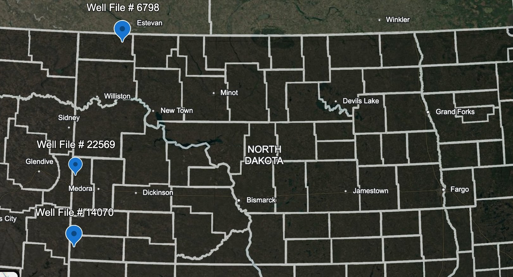
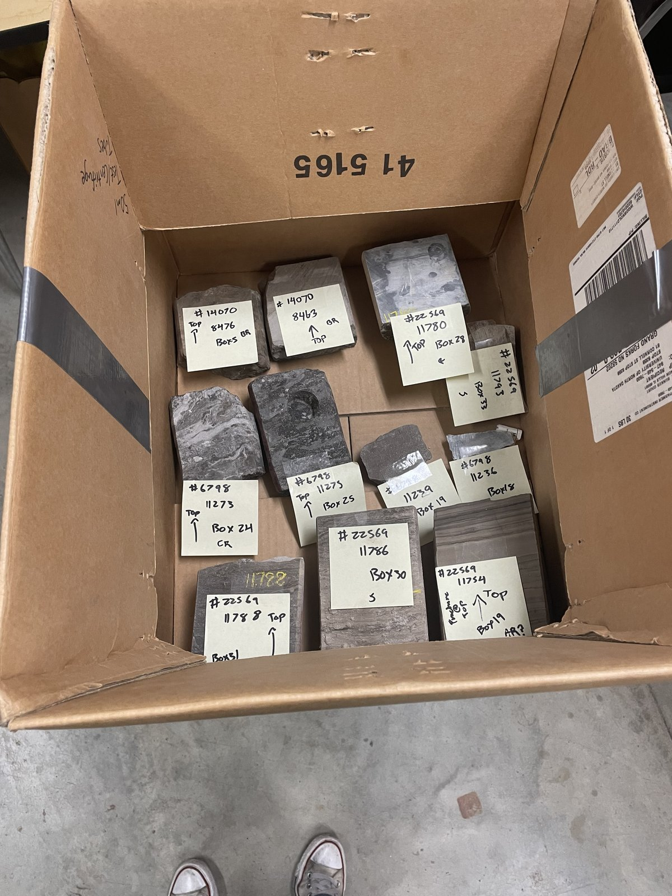
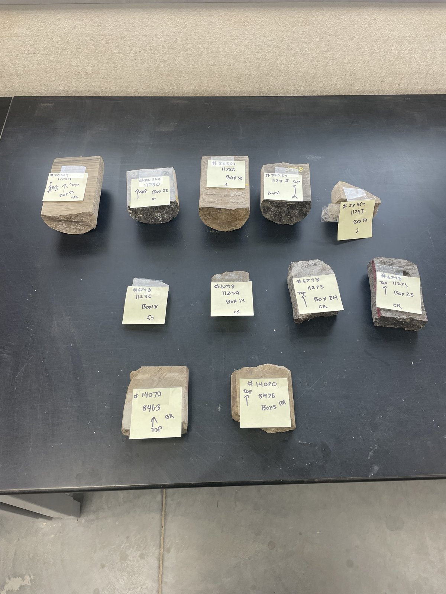
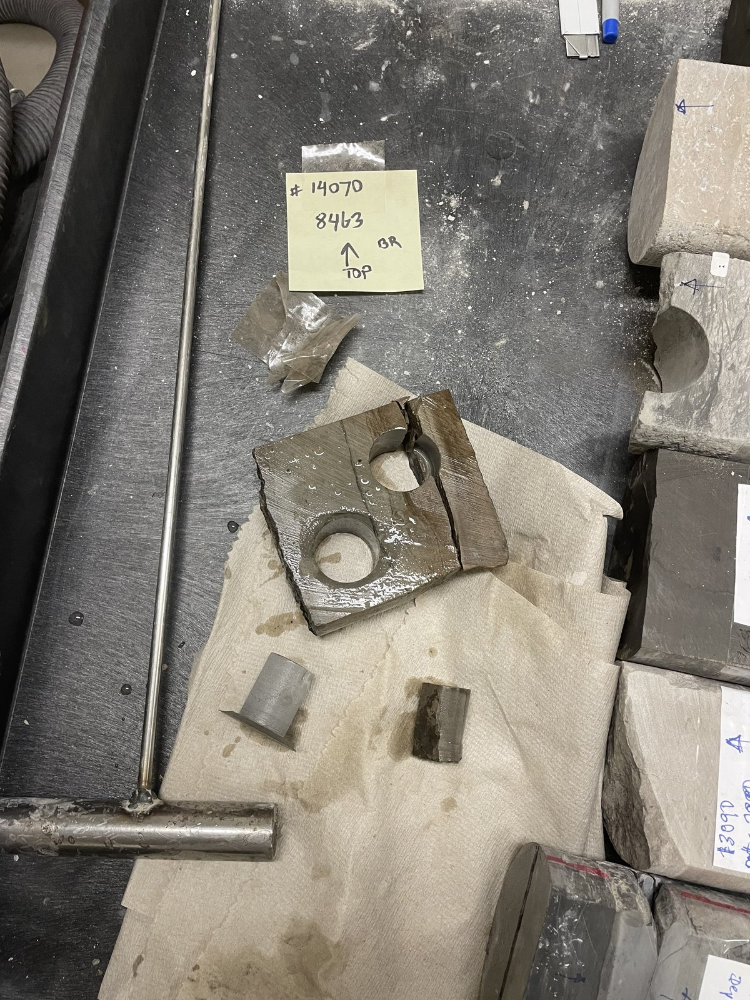
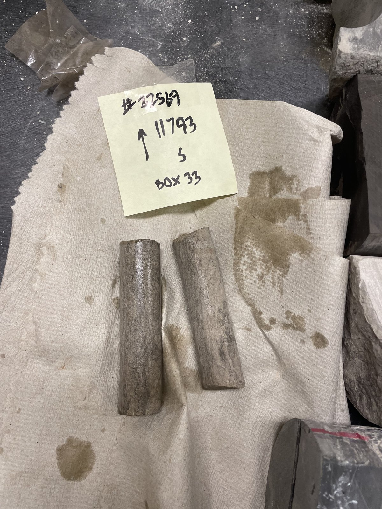
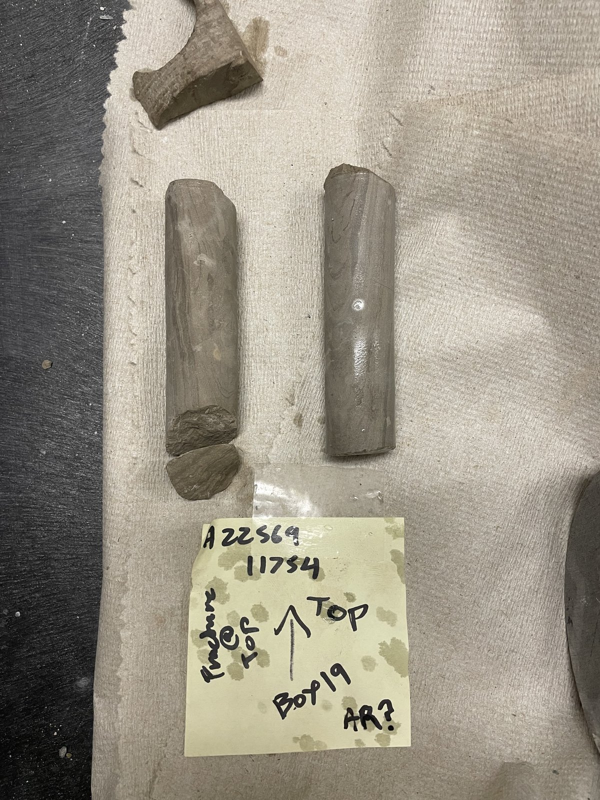
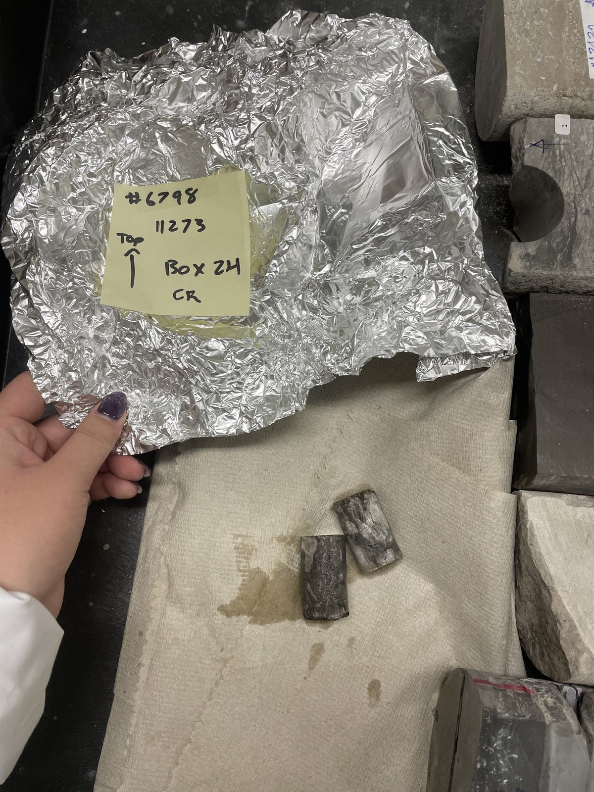

The actual rock. Before the simulation, there was core.
Photographs from the Wilson M. Laird Core and Sample Library, documenting the Red River Formation samples used to parameterize the reservoir model. Three offset wells, multiple core intervals, and the full lab workflow from slab to plug.
Why cores matter Methodology
No reservoir simulation is better than the rock properties it's built on. CMG GEM will happily accept any porosity and permeability numbers you hand it, and it will dutifully compute saturation fields and pressure responses from those inputs without ever knowing whether your rock is right. Getting the rock right means going to the core library, pulling physical samples, and running laboratory measurements on them.
This capstone drew on core samples from three Red River wells archived at the University of North Dakota's Wilson M. Laird Core and Sample Library: the Stecker 23-3 well itself (NDIC #22569) in Golden Valley County, plus two wells well outside the immediate Stecker area — #6798 up in Divide County on the basin's northern margin, and #14070 down in Bowman County near the Cedar Creek Anticline in the southwest corner of the state. Rather than sampling only the capstone well or only its immediate neighbors, this three-county spread samples the Red River across a substantial portion of its productive range in North Dakota. If the rock properties measured at all three locations are mutually consistent, that consistency is evidence of formation-scale rock behavior, not site-specific artifact. Stecker 23-3 anchors the simulation to the specific wellbore being modeled; #6798 and #14070 independently constrain the regional framework.
A and B zones Red River Targets
The Red River Formation isn't a single homogeneous unit — it's a stacked carbonate sequence with multiple productive benches separated by tighter intervals and anhydrite stringers. This project targets the Red River A zone and Red River B zone, the two intervals with the best combination of porosity, permeability, and effective sealing from overlying anhydrite layers. Core samples were specifically selected from both zones so that lab measurements would constrain properties for the simulation grid's A-zone and B-zone layers independently.
Lab-code suffixes on the working-set sticky notes reflect this zone targeting directly: AR denotes A-zone Red River samples, BR denotes B-zone Red River samples. Additional suffixes (CR, CS, S) on individual labels reference the lab team's internal tracking for plug type, slab condition, and intended analytical workflow.
Source wells Three counties, 196 miles
The three wells span a substantial portion of the Red River's productive extent across North Dakota. This isn't a sampling of convenience — sampling from a single wellbore or a tight geographic cluster would risk characterizing local diagenesis rather than formation-scale rock properties. Spreading samples from Divide County in the northwest corner of the state, through Golden Valley County in the west-central basin, down to Bowman County in the southwestern corner covers 196.6 mi end-to-end (measured between well #6798 and well #14070) and means the lab measurements reflect Red River properties across its full basinal-to-flank range.

Three Red River wells spanning the basin
Well #6798 in Divide County sits on the basin margin near the Canadian border; Stecker 23-3 (#22569) in Golden Valley County is in the west-central basin; well #14070 in Bowman County is in the southwestern corner near the Cedar Creek Anticline trend. Depth-to-Red-River varies substantially across this span — from ~8,463 ft in Bowman up to ~11,700 ft in Golden Valley — reflecting regional structural position rather than anything about the formation's intrinsic properties.
| NDIC File | County | Red River Depth | Sampled Intervals (ft) |
|---|---|---|---|
| #22569 (Stecker 23-3) | Golden Valley | ~11,732 ft | 11,754 (AR) · 11,780 · 11,786 · 11,788 · 11,793 |
| #6798 | Divide | ~11,236 ft | 11,236 · 11,239 · 11,273 · 11,275 (CR) |
| #14070 | Bowman | ~8,463 ft | 8,463 (BR) · 8,476 |
The working set Field Samples
Before any cutting or plug drilling, the full core sample set was laid out to confirm identity, orientation, and sample count. Each slab is labeled with the NDIC file number, depth, and box number from the core library archive. The lab notebook labels include "TOP" arrows to preserve stratigraphic orientation.

Working set on arrival at the lab
Core slabs as received from the Laird archive, grouped by well and depth. The mix of dark Red River dolomite with laminated carbonate-argillaceous intervals is evident even through the packing material.

Complete sample inventory
Every slab photographed against a neutral lab-table background with sticky-note labels confirming NDIC number, depth, and box number. Top row includes the Stecker 23-3 samples; bottom row includes the offset wells #6798 and #14070.
Core plug preparation Hassler / NMR workflow
Plugs are cylindrical sub-samples drilled from slab cores with a water-cooled diamond bit. The geometry (typically 1″ diameter × 1–2″ long) is what Hassler cell permeability testers, NMR T₂ spectrometers, and porosimeters all expect as input. Plug orientation is preserved vertical to bedding so measured permeability corresponds to the kv used in the simulation's grid.

Plug drilling in progress
Two plugs have just been extracted from this Red River B-zone slab of the #14070 offset well. The freshly-exposed core surface glistens with cooling water from the diamond bit. The plugs themselves (bottom of frame) will go into Hassler cell permeability testing.

Stecker 23-3 Red River plugs
Two vertical plugs drilled from Box 33 of the Stecker core. These are the actual rock samples whose porosity and permeability numbers propagate into the CMG simulation's grid cells for the wellbore neighborhood.
Red River in hand Intact intervals
Whole-round and slab samples across the Red River interval show the formation's characteristic features: laminated to bioturbated carbonate, occasional fractures, color variation from light gray to near-black depending on organic content and dolomitization. These are the rock textures the simulation is trying to represent abstractly as grid-cell properties.

A-zone whole-round plugs with observed fracture
Two whole-round plugs from Stecker 23-3 in the Red River A zone — one of the two target intervals for the dual-phase storage framework. The left specimen shows a natural fracture at the top, a reminder that real reservoir rock is anisotropic and heterogeneous in ways the 20×40×8 simulation grid can only approximate with effective properties.

Offset well #6798, wrapped for preservation
Aluminum foil is used to preserve core samples from air-drying and dust contamination between handling sessions. The smaller plugs below have already been extracted from this or an adjacent slab, and are ready for laboratory testing. Offset well #6798 provides framework for the Stecker simulation by documenting the lateral extent of Red River facies.
How this feeds the simulation From core to code
The laboratory results from these core samples become inputs to the CMG GEM reservoir simulation you see in the movies. The chain is straightforward but worth making explicit:
- Core plugs → Hassler cell → permeability (kv, in millidarcies)
- Core plugs → NMR T2 spectrometer → pore size distribution and porosity (φ, in percent)
- Plug geometry + brine saturation → electrical resistivity / Archie parameters
- Measured φ and k values → populated into the CMG GEM grid-cell property distributions
- Simulation runs produce the saturation and pressure movies on the main page
In other words: every colored pixel you see in the Red River simulation movies traces back, in part, to measurements on rock you can see in the photographs on this page. The simulation is only as good as the rock that fed it, and the rock that fed it came from real wells drilled into real formations by real operators, cored and archived for decades, and re-measured by this capstone team for this specific question about dual-phase storage and recovery.
Core samples accessed under visiting researcher arrangements at the Wilson M. Laird Core and Sample Library, Department of Mineral Resources, University of North Dakota, Grand Forks.
Photographs: Paul Helms, 2025. Lab characterization work supported by team members Peter Douglas, Delaney Vargas, Caitlin Hecker, and Parker McDermott, under supervision of Dr. Dongmei Wang.